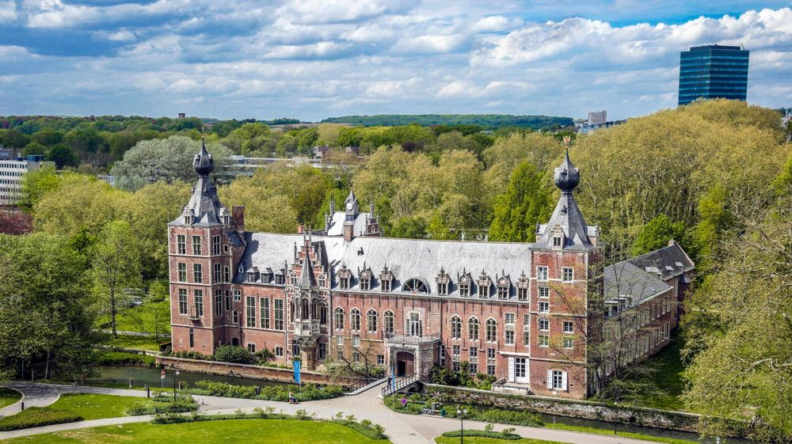
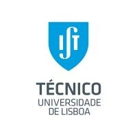
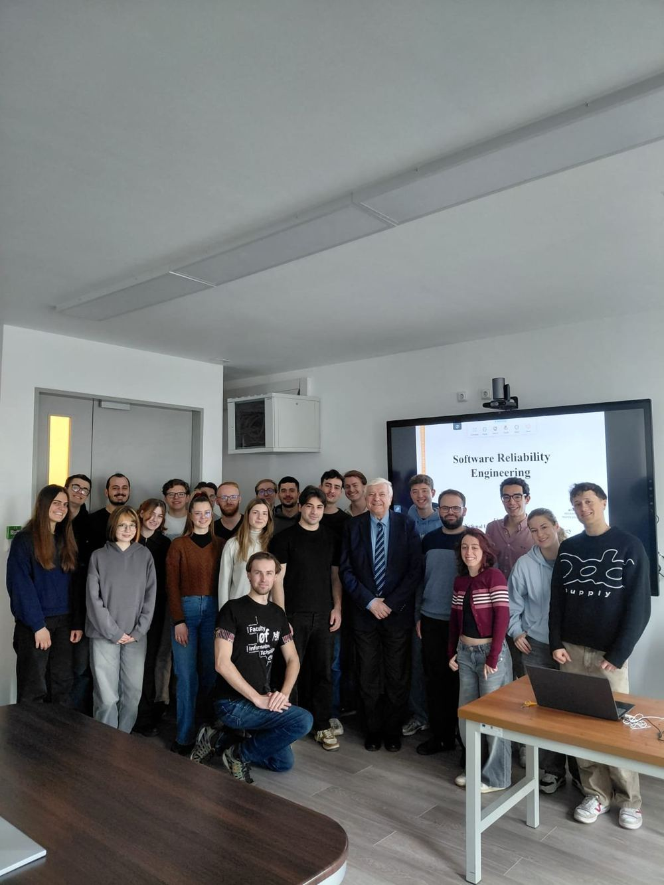

Biomedical Engineer
MSc student at KU Leuven in Bioinformatics & AI, building technology-driven solutions that bridge healthcare and engineering. Actively driving innovation in the biomedical field — acquiring skills in web development, data analysis, and software engineering.
"Committed to making a positive impact on society."
Portugal · Belgium
Academic & Professional Path


International Exchange
Two intensive weeks across Europe with the Athens Programme — connecting engineering students through specialised short courses at leading European universities.
A formative experience blending academic depth with cross-cultural exchange, building lasting friendships and a broader European perspective.

Recognition
Expertise